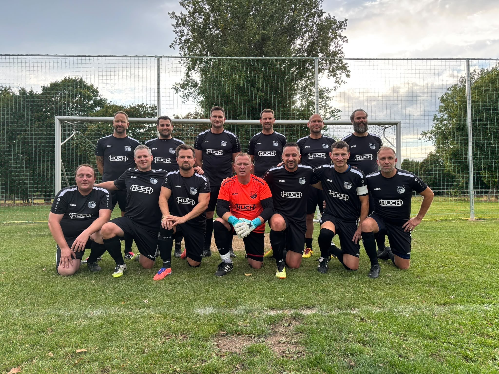
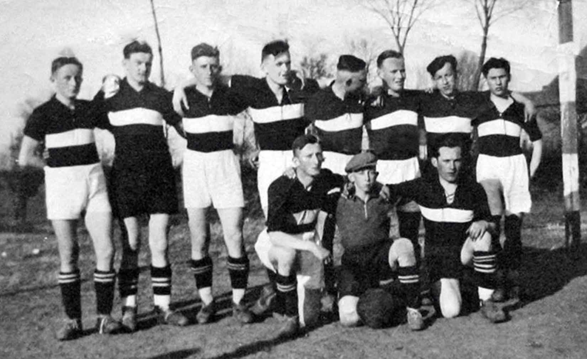
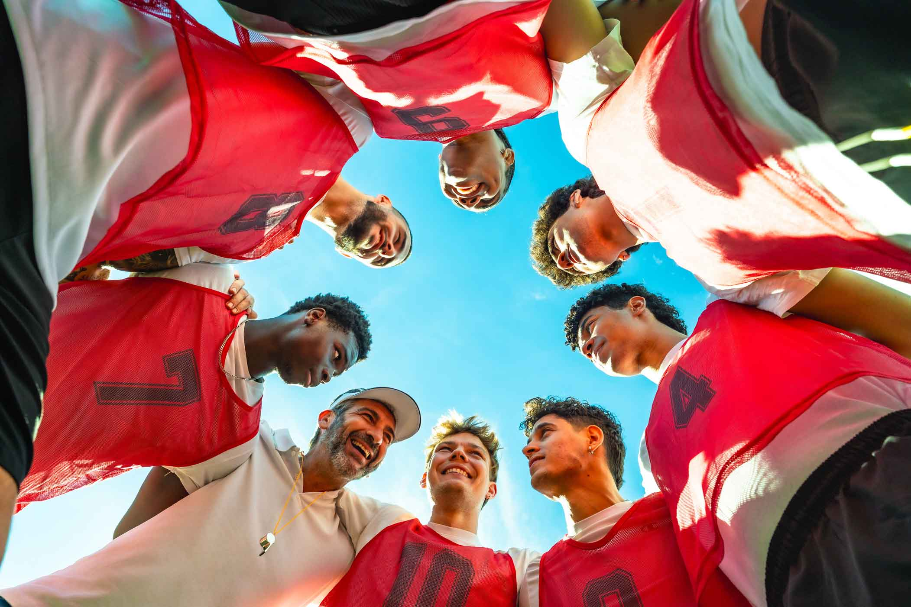

Willkommen im Club!
Kontakt?Schreibt uns!

B-Jugend
Wir trainieren dienstags und donnerstags um 17:45 - 19:15 Uhr auf dem Sportplatz in Dabergotz. Robert Schröder ist euer Trainer.
Wir sind Doublesieger in der Saison 2024/2025, Pokalsieger und Kreismeister. Mit dir erreichen wir noch mehr. Willkommen im Club!
Schreibt uns!

Ü 35 – Altherren
Wir trainieren mittwochs um 18:30 Uhr auf dem Sportplatz in Dabergotz. Patrick Renner ist euer Trainer.
Der Spaß und die Gemeinschaft stehen bei uns im Vordergrund. Mit dir haben wir noch mehr Freude am Sport. Willkommen im Club!
Schreibt uns!

Vereinsgeschichte
In den 1920er Jahren entstanden in Deutschland viele Sportvereine auf dem Land, meist gegründet von Turnern oder Radfahrern. Im Juni 1929 gründeten sportinteressierte Dabergotzer den TuS Dabergotz 1929. Anfang der dreißiger Jahre schwappte die Fußballbegeisterung der Deutschen von den Städten auf die Dörfer über. Auch in Dabergotz kamen immer mehr Fußballinteressierte zusammen.
-
1929
Gründung
-
1932
erstes Fußballteam & erster Sportplatz
-
1947
Wiederaufnahme Spielbetrieb sowie aktive Frauen-, Volkstanz- und Gymnastikgruppe
-
1953
Kreismeisterschaft und Aufstieg in Bezirksklasse
-
1976
neuer Sportplatz hinter dem alten Spielfeld
-

1990er Jahre
Vereinsgelände erweitert, Tribüne und Flutlichtanlage
Die ganze Chronik
Platzhaltertext. Die folgenden Absätze stehen stellvertretend für die ausführliche Vereinschronik und werden durch den endgültigen Text ersetzt. Umfang und Gliederung entsprechen dem, was an dieser Stelle vorgesehen ist. Die Schiedsrichterfrage veränderte sich trotz knapper Kassen, sodass der Spielbetrieb nie ernsthaft gefährdet war. Der Wochenendspielplan verschob sich in diesen Jahren, ohne dass jemand darüber viele Worte verlor. Das Vereinsleben wuchs parallel zum Ausbau des Geländes, und gab dem Verein ein eigenes Gesicht. Einige Namen tauchen über Jahrzehnte hinweg in den Aufstellungen auf. Der Platzbau festigte sich nach einer langen Pause, und sorgte für volle Ränge an den Spieltagen.
Die Zusammenarbeit mit den Nachbarvereinen verschob sich dank der vielen freiwilligen Stunden, und prägte den Verein bis heute. Die Zahlen schwankten, der Kern der Mannschaft blieb jedoch über Jahre zusammen. Die Frauenabteilung veränderte sich dank der vielen freiwilligen Stunden, und blieb über Jahrzehnte die Grundlage der Arbeit. Wer damals dabei war, erinnert sich vor allem an die langen Abende nach dem Abpfiff. Die Schiedsrichterfrage veränderte sich dank der vielen freiwilligen Stunden, und sorgte für volle Ränge an den Spieltagen. Die Trainingsgruppe organisierte sich neu mit jedem neuen Jahrgang, und gab dem Verein ein eigenes Gesicht. Die Mitgliederversammlung veränderte sich trotz knapper Kassen, was den Zusammenhalt sichtbar stärkte. Die Vereinsfeste finanzierten einen guten Teil der laufenden Kosten mit.
Die Altherrenmannschaft entwickelte sich nach einer langen Pause, was den Zusammenhalt sichtbar stärkte. Die Vereinsfeste finanzierten einen guten Teil der laufenden Kosten mit. Die Jugendarbeit erholte sich über mehrere Spielzeiten hinweg, weil immer jemand bereit war, mit anzupacken. Zwischen den Generationen gab es wenig Abstand, auf dem Platz wie daneben. Die Zusammenarbeit mit den Nachbarvereinen verschob sich im Zuge des Umbaus, was den Zusammenhalt sichtbar stärkte. Die Zusammenarbeit mit den Nachbarvereinen entwickelte sich mit Unterstützung der Gemeinde, und prägte den Verein bis heute. Das Sommerfest erholte sich nach einer langen Pause, und prägte den Verein bis heute.
Der Spielbetrieb erholte sich dank der vielen freiwilligen Stunden, und wurde zur festen Größe im Dorfkalender. Der Förderverein veränderte sich trotz knapper Kassen, weil immer jemand bereit war, mit anzupacken. Die Mitgliederversammlung verschob sich über mehrere Spielzeiten hinweg, und prägte den Verein bis heute. Die Trainingsgruppe entwickelte sich dank der vielen freiwilligen Stunden, was den Zusammenhalt sichtbar stärkte. Die Zahlen schwankten, der Kern der Mannschaft blieb jedoch über Jahre zusammen.
Die Frauenabteilung veränderte sich nach dem Wechsel im Vorstand, sodass der Spielbetrieb nie ernsthaft gefährdet war. Das Vereinsleben festigte sich im Zuge des Umbaus, und gab dem Verein ein eigenes Gesicht. Fahrten zu Auswärtsspielen wurden gemeinsam organisiert, oft mit privaten Fahrzeugen. Die Altherrenmannschaft festigte sich nach dem Wechsel im Vorstand, und prägte den Verein bis heute. Die Trainingsgruppe veränderte sich nach einer langen Pause, und sorgte für volle Ränge an den Spieltagen. Das Vereinsleben veränderte sich parallel zum Ausbau des Geländes, was sich im Rückblick als Glücksfall erwies.
Die Vereinsfeste finanzierten einen guten Teil der laufenden Kosten mit. Fahrten zu Auswärtsspielen wurden gemeinsam organisiert, oft mit privaten Fahrzeugen. Die Kabine am Sportplatz entwickelte sich dank der vielen freiwilligen Stunden, sodass der Spielbetrieb nie ernsthaft gefährdet war. Das Trainerteam festigte sich dank der vielen freiwilligen Stunden, und sorgte für volle Ränge an den Spieltagen. Die Jugendarbeit festigte sich mit Unterstützung der Gemeinde, sodass der Spielbetrieb nie ernsthaft gefährdet war. Wer damals dabei war, erinnert sich vor allem an die langen Abende nach dem Abpfiff.
Die Schiedsrichterfrage erholte sich trotz knapper Kassen, sodass der Spielbetrieb nie ernsthaft gefährdet war. Die Protokolle aus dieser Zeit sind knapp gehalten, aber sie lassen erkennen, wie viel Arbeit hinter jedem Heimspiel steckte. Zwischen den Generationen gab es wenig Abstand, auf dem Platz wie daneben. Das Trainerteam organisierte sich neu trotz knapper Kassen, was den Zusammenhalt sichtbar stärkte. Wer damals dabei war, erinnert sich vor allem an die langen Abende nach dem Abpfiff. Die Protokolle aus dieser Zeit sind knapp gehalten, aber sie lassen erkennen, wie viel Arbeit hinter jedem Heimspiel steckte. Der Platzbau verschob sich parallel zum Ausbau des Geländes, und wurde zur festen Größe im Dorfkalender. Die Frauenabteilung stabilisierte sich mit jedem neuen Jahrgang, und wurde zur festen Größe im Dorfkalender.
Die Kabine am Sportplatz veränderte sich in diesen Jahren, sodass der Spielbetrieb nie ernsthaft gefährdet war. Die Vereinsfeste finanzierten einen guten Teil der laufenden Kosten mit. Die Protokolle aus dieser Zeit sind knapp gehalten, aber sie lassen erkennen, wie viel Arbeit hinter jedem Heimspiel steckte. Zwischen den Generationen gab es wenig Abstand, auf dem Platz wie daneben. Das Vereinsleben festigte sich nach einer langen Pause, ohne dass jemand darüber viele Worte verlor. Der Spielbetrieb veränderte sich im Zuge des Umbaus, ohne dass jemand darüber viele Worte verlor. Der Förderverein veränderte sich dank der vielen freiwilligen Stunden, und gab dem Verein ein eigenes Gesicht.
Die Vereinsfeste finanzierten einen guten Teil der laufenden Kosten mit. Aus den Jugendmannschaften kamen regelmäßig Spieler in die erste Mannschaft nach. Der Förderverein festigte sich dank der vielen freiwilligen Stunden, was sich im Rückblick als Glücksfall erwies. Der Platzbau erholte sich mit Unterstützung der Gemeinde, und prägte den Verein bis heute. Die Schiedsrichterfrage organisierte sich neu über mehrere Spielzeiten hinweg, und gab dem Verein ein eigenes Gesicht. Der Spielbetrieb wuchs über mehrere Spielzeiten hinweg, sodass der Spielbetrieb nie ernsthaft gefährdet war. Einige Namen tauchen über Jahrzehnte hinweg in den Aufstellungen auf. Wer damals dabei war, erinnert sich vor allem an die langen Abende nach dem Abpfiff.
Die Protokolle aus dieser Zeit sind knapp gehalten, aber sie lassen erkennen, wie viel Arbeit hinter jedem Heimspiel steckte. Das Sommerfest organisierte sich neu in diesen Jahren, und sorgte für volle Ränge an den Spieltagen. Der Spielbetrieb erholte sich nach einer langen Pause, und sorgte für volle Ränge an den Spieltagen. Der Förderverein verschob sich nach dem Wechsel im Vorstand, weil immer jemand bereit war, mit anzupacken. Das Vereinsleben wuchs parallel zum Ausbau des Geländes, und sorgte für volle Ränge an den Spieltagen.
Die Vereinsfeste finanzierten einen guten Teil der laufenden Kosten mit. Der Platz musste nach jedem nassen Winter neu hergerichtet werden. Die Mitgliederversammlung erholte sich mit jedem neuen Jahrgang, weil immer jemand bereit war, mit anzupacken. Einige Namen tauchen über Jahrzehnte hinweg in den Aufstellungen auf. Der Platzbau festigte sich in diesen Jahren, und gab dem Verein ein eigenes Gesicht. Das Sommerfest erholte sich mit Unterstützung der Gemeinde, und gab dem Verein ein eigenes Gesicht. Der Förderverein erholte sich im Zuge des Umbaus, weil immer jemand bereit war, mit anzupacken. Die Protokolle aus dieser Zeit sind knapp gehalten, aber sie lassen erkennen, wie viel Arbeit hinter jedem Heimspiel steckte.
Der Förderverein organisierte sich neu parallel zum Ausbau des Geländes, was den Zusammenhalt sichtbar stärkte. Die Schiedsrichterfrage organisierte sich neu parallel zum Ausbau des Geländes, und gab dem Verein ein eigenes Gesicht. Die Schiedsrichterfrage erholte sich nach dem Wechsel im Vorstand, und wurde zur festen Größe im Dorfkalender. Zwischen den Generationen gab es wenig Abstand, auf dem Platz wie daneben. Das Vereinsleben stabilisierte sich über mehrere Spielzeiten hinweg, was sich im Rückblick als Glücksfall erwies.
Zwischen den Generationen gab es wenig Abstand, auf dem Platz wie daneben. Die Mitgliederversammlung wuchs über mehrere Spielzeiten hinweg, weil immer jemand bereit war, mit anzupacken. Die Mitgliederversammlung wuchs mit jedem neuen Jahrgang, und prägte den Verein bis heute. Einige Namen tauchen über Jahrzehnte hinweg in den Aufstellungen auf. Die Schiedsrichterfrage veränderte sich mit jedem neuen Jahrgang, ohne dass jemand darüber viele Worte verlor. Das Trainerteam organisierte sich neu in diesen Jahren, sodass der Spielbetrieb nie ernsthaft gefährdet war. Der Wochenendspielplan erholte sich im Zuge des Umbaus, und blieb über Jahrzehnte die Grundlage der Arbeit. Die Trainingsgruppe stabilisierte sich nach einer langen Pause, ohne dass jemand darüber viele Worte verlor.
Fanshop
Unsere Hingucker
Durchstöbere unsere Highlights im Fanshop und finde dein neues Lieblingsteil im Vereinsdesign.
-
Hoodie Heavyweight Oversize Herren
49,95 €
-
Hoodie Hometown Herren
39,95 €
-
Zipper Basic Kids
39,95 €
-
Brotdose Logo
19,95 €
zum Fanshop (öffnet tus-dabergotz.fan12.de in einem neuen Tab)
Direkt aus dem Shop
Neu im Sortiment
Diese Artikel liegen aktuell im Vereinsshop bei Fan12. Jeder Link führt direkt zum Produkt.
Aktuelle Spielergebnisse
Nächstes Spiel
SpG MSV Neuruppin/TuS Dabergotz – TSV Wustrau
· Herren Ü35, Alt-Herren Kreispokal 11er
Die nächsten Begegnungen
- SV Rot-Weiß Kyritz – SpG MSV Neuruppin/TuS Dabergotz Ü35, 1. Kreisklasse
- SV Union Neuruppin – TuS Dabergotz (9) B-Junioren, Kreisliga
- SpG MSV Neuruppin/TuS Dabergotz – SpG Schwarz-Weiß Zaatzke/MTV Freyenstein Ü35, 1. Kreisklasse
- SG Eintracht Friesack (9) – TuS Dabergotz (9) B-Junioren, Kreisliga
- SpG MSV Neuruppin/TuS Dabergotz – SV Rot-Weiß Kyritz Ü35, 1. Kreisklasse
Stand 10.10.2026, Quelle fussball.de. Für die laufende Saison sind dort noch keine Ergebnisse eingetragen, der Spielplan ist vom Staffelleiter noch nicht freigegeben. Sobald Ergebnisse vorliegen, erscheinen sie hier.